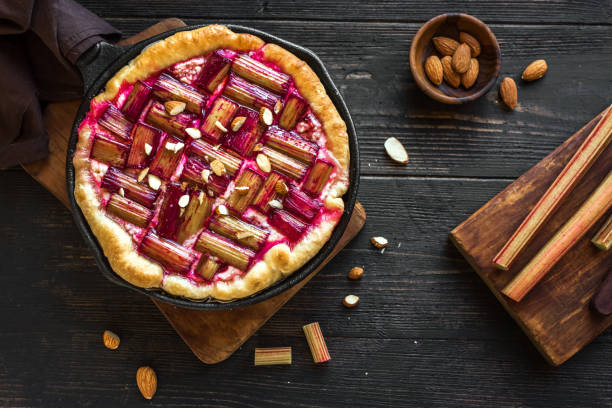

Known as the “pie plant,” brilliant pink and green rhubarb makes a tart and fruity pie that’s worthy of its nickname.
You know it's spring when rhubarb shoots appear in your yard. Finally, you have summer to look forward to and a whole season of fresh pies. Because of this early start and rhubarb's ubiquity in pies, it has even garnered the nickname "pie plant."
Rhubarb is incredibly sour when raw. It seriously makes you pucker. My parents grow rhubarb in their yard, and every spring when I was little, my dad and I would take a bite from a fresh stalk and compete to see who could recover enough to whistle first after such a tart bite. But don't worry; behind its sour bite is a distinctive citrusy and fruity flavor when cooked and tamed with sugar.